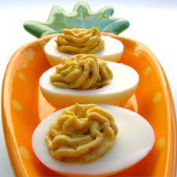

Bacon Cheddar Deviled Eggs

These bacon and cheddar deviled eggs are better than your ordinary deviled eggs.
Ingredients
- 12 eggs
- 1/2 cup mayo
- 4 slices of bacon
- 2 tablespoons finely shredded cheddar cheese
- 1 tablespoon mustard
Steps
- Place eggs in a saucepan, and cover with cold water. Bring water to a boil and immediately remove from heat. Cover and let eggs stand in hot water for 10-12 minutes. Remove from hot water and cool. To cool quicker, rinse eggs under cold running water.
- Meanwhile, place bacon in a large deep skillet. Cook over medium-high heat until evenly brown. ALternatively, wrap bacon in paper towels and cook in the microwave for about 1 minute per slice. Crumble and set aside.
- Peel the hard-boiled eggs and cut in half lengthwise. Remove yolks to a small bowl. Mash egg yolks with mayo, crumbled bacon, and cheese. Stir in mustard. Fill egg white halves with the yolk mixture and refrigerate before serving.